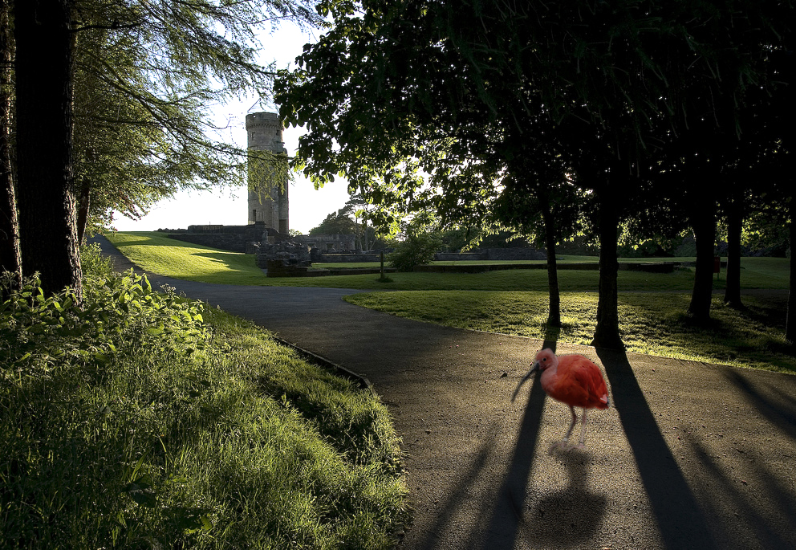

| Using Filters week 04 |
|  |
| The original background picture. (Source: www.Flickr.com) |
| I used Adpbe Photohshop CS2 for this assignment. Accented Edges: Accentuates the edges of an image. When the edge brightness control is set to a high value, the accents resemble white chalk; when set to a low value, the accents resemble black ink. (Source: Adobe Help Center) |
| KishanW(2008). |